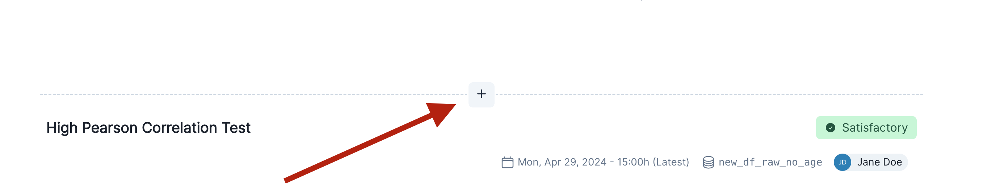
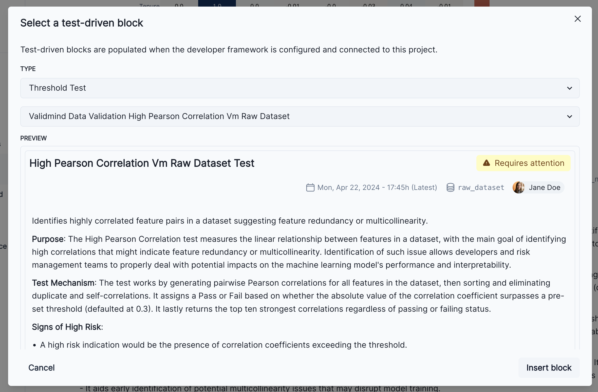
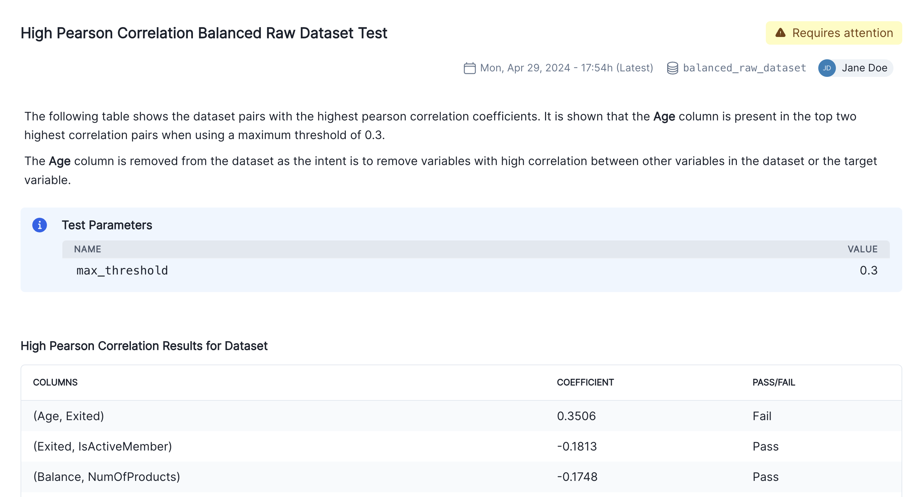
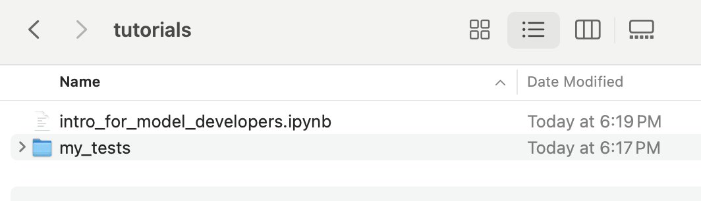
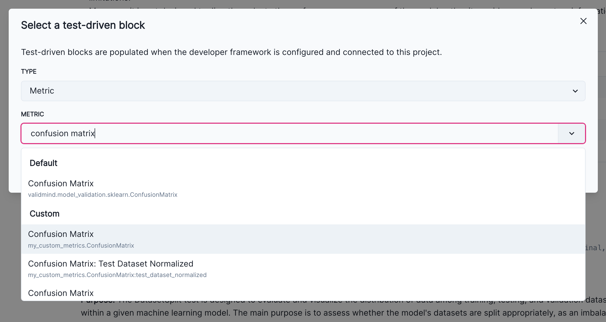

%pip install -q validmindWARNING: visions 0.7.5 does not provide the extra 'type-image-path'
Note: you may need to restart the kernel to use updated packages.As a model developer, learn how the end-to-end documentation process works based on common scenarios you encounter in model development settings.
As a prerequisite, a model documentation template must be available on the platform. You can view the available templates to see what has been defined on the platform.
This notebook uses a binary classification model as an example, but the same principles shown here apply to other model types.
1. Initializing the ValidMind Developer Framework
ValidMind’s developer framework provides a rich collection of documentation tools and test suites, from documenting descriptions of datasets to validation and testing of models using a variety of open-source testing frameworks.
2. Start the model development process with raw data, run out-of-the box tests, and add evidence to model documentation
Learn how to access ValidMind’s test repository of individual tests that you will use as building blocks to ensure a model is being built appropriately. The goal is to show how to run tests, investigate results, and add tests results or evidence to the documentation.
For a full list of out-of-the-box tests, see Test descriptions or try the interactive Test sandbox.
3. Implementing custom tests
Usually, model developers have their own custom tests and it is important to include this within the model documentation. We will show you how to include custom tests and then how they can be added to documentation as additional evidence.
4. Finalize testing and documentation
Learn how you can ensure that model documentation includes custom tests and how to make test configuration changes that apply to all tests in the model documentation template. At the end of this section you should have a fully documented model ready for review.
ValidMind is a platform for managing model risk, including risk associated with AI and statistical models. You use the ValidMind Developer Framework to automate documentation and validation tests, and then use the ValidMind AI Risk Platform UI to collaborate on model documentation. Together, these products simplify model risk management, facilitate compliance with regulations and institutional standards, and enhance collaboration between yourself and model validators.
This notebook assumes you have basic familiarity with Python, including an understanding of how functions work. If you are new to Python, you can still run the notebook but we recommend further familiarizing yourself with the language.
If you encounter errors due to missing modules in your Python environment, install the modules with pip install, and then re-run the notebook. For more help, refer to Installing Python Modules.
If you haven’t already seen our Get started with the ValidMind Developer Framework, we recommend you explore the available resources for developers at some point. There, you can learn more about documenting models, find code samples, or read our developer reference.
For access to all features available in this notebook, create a free ValidMind account.
Signing up is FREE — Sign up nowModel documentation: A structured and detailed record pertaining to a model, encompassing key components such as its underlying assumptions, methodologies, data sources, inputs, performance metrics, evaluations, limitations, and intended uses. It serves to ensure transparency, adherence to regulatory requirements, and a clear understanding of potential risks associated with the model’s application.
Documentation template: Functions as a test suite and lays out the structure of model documentation, segmented into various sections and sub-sections. Documentation templates define the structure of your model documentation, specifying the tests that should be run, and how the results should be displayed.
Tests: A function contained in the ValidMind Developer Framework, designed to run a specific quantitative test on the dataset or model. Tests are the building blocks of ValidMind, used to evaluate and document models and datasets, and can be run individually or as part of a suite defined by your model documentation template.
Custom tests: Custom tests are functions that you define to evaluate your model or dataset. These functions can be registered with ValidMind to be used in the platform.
Inputs: Objects to be evaluated and documented in the ValidMind framework. They can be any of the following:
vm.init_model().vm.init_dataset().Parameters: Additional arguments that can be passed when running a ValidMind test, used to pass additional information to a test, customize its behavior, or provide additional context.
Outputs: Custom tests can return elements like tables or plots. Tables may be a list of dictionaries (each representing a row) or a pandas DataFrame. Plots may be matplotlib or plotly figures.
Test suites: Collections of tests designed to run together to automate and generate model documentation end-to-end for specific use-cases.
Example: the classifier_full_suite test suite runs tests from the tabular_dataset and classifier test suites to fully document the data and model sections for binary classification model use-cases.
Please note the following recommended Python versions to use:
The client library provides Python support for the ValidMind Developer Framework. To install it run:
%pip install -q validmindWARNING: visions 0.7.5 does not provide the extra 'type-image-path'
Note: you may need to restart the kernel to use updated packages.ValidMind generates a unique code snippet for each registered model to connect with your developer environment. You initialize the client library with this code snippet, which ensures that your documentation and tests are uploaded to the correct model when you run the notebook.
Get your code snippet:
In a browser, log into the Platform UI.
In the left sidebar, navigate to Model Inventory and click + Register new model.
Enter the model details and click Continue. (Need more help?)
For example, to register a model for use with this notebook, select:
Binary classificationMarketing/Sales - Attrition/Churn ManagementYou can fill in other options according to your preference.
Go to Getting Started and click Copy snippet to clipboard.
Next, replace this placeholder with your own code snippet:
# Replace with your code snippet
import validmind as vm
vm.init(
api_host="https://api.prod.validmind.ai/api/v1/tracking",
api_key="...",
api_secret="...",
project="...",
)2024-06-12 16:27:23,250 - INFO(validmind.api_client): Connected to ValidMind. Project: [Training] ValidMind Introduction for Model Developers - Initial Validation (clxcdxmru02ts29ifnnrg6k4j)Let’s verify that you have connected to ValidMind and that the appropriate template is selected. A template predefines sections for your model documentation and provides a general outline to follow, making the documentation process much easier.
You will upload documentation and test results for this template later on. For now, take a look at the structure that the template provides with the vm.preview_template() function from the ValidMind library and note the empty sections:
vm.preview_template()Before learning how to run tests, let’s explore the list of all available tests in the ValidMind Developer Framework. You can see that the documentation template for this model has references to some of the test IDs listed below.
vm.tests.list_tests()| ID | Name | Description | Required Inputs | Params |
|---|---|---|---|---|
| validmind.prompt_validation.Bias | Bias | Evaluates bias in a Large Language Model based on the order and distribution of exemplars in a prompt.... | ['model.prompt'] | {'min_threshold': 7} |
| validmind.prompt_validation.Clarity | Clarity | Evaluates and scores the clarity of prompts in a Large Language Model based on specified guidelines.... | ['model.prompt'] | {'min_threshold': 7} |
| validmind.prompt_validation.Specificity | Specificity | Evaluates and scores the specificity of prompts provided to a Large Language Model (LLM), based on clarity,... | ['model.prompt'] | {'min_threshold': 7} |
| validmind.prompt_validation.Robustness | Robustness | Assesses the robustness of prompts provided to a Large Language Model under varying conditions and contexts.... | ['model'] | {'num_tests': 10} |
| validmind.prompt_validation.NegativeInstruction | Negative Instruction | Evaluates and grades the use of affirmative, proactive language over negative instructions in LLM prompts.... | ['model.prompt'] | {'min_threshold': 7} |
| validmind.prompt_validation.Conciseness | Conciseness | Analyzes and grades the conciseness of prompts provided to a Large Language Model.... | ['model.prompt'] | {'min_threshold': 7} |
| validmind.prompt_validation.Delimitation | Delimitation | Evaluates the proper use of delimiters in prompts provided to Large Language Models.... | ['model.prompt'] | {'min_threshold': 7} |
| validmind.model_validation.BertScore | Bert Score | Evaluates the quality of machine-generated text using BERTScore metrics and visualizes the results through histograms... | ['dataset', 'model'] | {} |
| validmind.model_validation.RegardScore | Regard Score | Computes and visualizes the regard score for each text instance, assessing sentiment and potential biases.... | ['dataset', 'model'] | {} |
| validmind.model_validation.BleuScore | Bleu Score | Evaluates the quality of machine-generated text using BLEU metrics and visualizes the results through histograms... | ['dataset', 'model'] | {} |
| validmind.model_validation.RegressionResidualsPlot | Regression Residuals Plot | Evaluates regression model performance using residual distribution and actual vs. predicted plots.... | ['model', 'dataset'] | {'bin_size': 0.1} |
| validmind.model_validation.FeaturesAUC | Features AUC | Evaluates the discriminatory power of each individual feature within a binary classification model by calculating the Area Under the Curve (AUC) for each feature separately.... | ['model', 'dataset'] | {'fontsize': 12, 'figure_height': 500} |
| validmind.model_validation.ContextualRecall | Contextual Recall | Evaluates a Natural Language Generation model's ability to generate contextually relevant and factually correct text, visualizing the results through histograms and bar charts, alongside compiling a comprehensive table of descriptive statistics for contextual recall scores.... | ['dataset', 'model'] | {} |
| validmind.model_validation.MeteorScore | Meteor Score | Computes and visualizes the METEOR score for each text generation instance, assessing translation quality.... | ['dataset', 'model'] | {} |
| validmind.model_validation.RougeScore | Rouge Score | Evaluates the quality of machine-generated text using ROUGE metrics and visualizes the results through histograms... | ['dataset', 'model'] | {'metric': 'rouge-1'} |
| validmind.model_validation.ModelMetadata | Model Metadata | Extracts and summarizes critical metadata from a machine learning model instance for comprehensive analysis.... | ['model'] | {} |
| validmind.model_validation.ClusterSizeDistribution | Cluster Size Distribution | Compares and visualizes the distribution of cluster sizes in model predictions and actual data for assessing... | ['model', 'dataset'] | {} |
| validmind.model_validation.TokenDisparity | Token Disparity | Evaluates the token disparity between reference and generated texts, visualizing the results through histograms... | ['dataset', 'model'] | {} |
| validmind.model_validation.ToxicityScore | Toxicity Score | Computes and visualizes the toxicity score for input text, true text, and predicted text, assessing content quality and potential risk.... | ['dataset', 'model'] | {} |
| validmind.model_validation.embeddings.CosineSimilarityComparison | Cosine Similarity Comparison | Computes pairwise cosine similarities between model embeddings and visualizes the results through bar charts,... | ['dataset', 'models'] | {} |
| validmind.model_validation.embeddings.EmbeddingsVisualization2D | Embeddings Visualization2 D | Visualizes 2D representation of text embeddings generated by a model using t-SNE technique.... | ['model', 'dataset'] | {'cluster_column': None, 'perplexity': 30} |
| validmind.model_validation.embeddings.StabilityAnalysisRandomNoise | Stability Analysis Random Noise | Evaluate robustness of embeddings models to random noise introduced by using... | ['model', 'dataset'] | {'mean_similarity_threshold': 0.7, 'probability': 0.02} |
| validmind.model_validation.embeddings.TSNEComponentsPairwisePlots | TSNE Components Pairwise Plots | Plots individual scatter plots for pairwise combinations of t-SNE components of embeddings.... | ['dataset', 'model'] | {'n_components': 2, 'perplexity': 30, 'title': 't-SNE'} |
| validmind.model_validation.embeddings.CosineSimilarityDistribution | Cosine Similarity Distribution | Assesses the similarity between predicted text embeddings from a model using a Cosine Similarity distribution... | ['model', 'dataset'] | {} |
| validmind.model_validation.embeddings.PCAComponentsPairwisePlots | PCA Components Pairwise Plots | Generates scatter plots for pairwise combinations of principal component analysis (PCA) components of model embeddings.... | ['dataset', 'model'] | {'n_components': 3} |
| validmind.model_validation.embeddings.CosineSimilarityHeatmap | Cosine Similarity Heatmap | Generates an interactive heatmap to visualize the cosine similarities among embeddings derived from a given model.... | ['dataset', 'model'] | {'title': 'Cosine Similarity Matrix', 'color': 'Cosine Similarity', 'xaxis_title': 'Index', 'yaxis_title': 'Index', 'color_scale': 'Blues'} |
| validmind.model_validation.embeddings.StabilityAnalysisTranslation | Stability Analysis Translation | Evaluate robustness of embeddings models to noise introduced by translating... | ['model', 'dataset'] | {'source_lang': 'en', 'target_lang': 'fr', 'mean_similarity_threshold': 0.7} |
| validmind.model_validation.embeddings.EuclideanDistanceComparison | Euclidean Distance Comparison | Computes pairwise Euclidean distances between model embeddings and visualizes the results through bar charts,... | ['dataset', 'models'] | {} |
| validmind.model_validation.embeddings.ClusterDistribution | Cluster Distribution | Assesses the distribution of text embeddings across clusters produced by a model using KMeans clustering.... | ['model', 'dataset'] | {'num_clusters': 5} |
| validmind.model_validation.embeddings.EuclideanDistanceHeatmap | Euclidean Distance Heatmap | Generates an interactive heatmap to visualize the Euclidean distances among embeddings derived from a given model.... | ['dataset', 'model'] | {'title': 'Euclidean Distance Matrix', 'color': 'Euclidean Distance', 'xaxis_title': 'Index', 'yaxis_title': 'Index', 'color_scale': 'Blues'} |
| validmind.model_validation.embeddings.StabilityAnalysis | Stability Analysis | Base class for embeddings stability analysis tests | ['model', 'dataset'] | {'mean_similarity_threshold': 0.7} |
| validmind.model_validation.embeddings.StabilityAnalysisKeyword | Stability Analysis Keyword | Evaluate robustness of embeddings models to keyword swaps on the test dataset... | ['model', 'dataset'] | {'keyword_dict': None, 'mean_similarity_threshold': 0.7} |
| validmind.model_validation.embeddings.StabilityAnalysisSynonyms | Stability Analysis Synonyms | Evaluates the stability of text embeddings models when words in test data are replaced by their synonyms randomly.... | ['model', 'dataset'] | {'probability': 0.02, 'mean_similarity_threshold': 0.7} |
| validmind.model_validation.embeddings.DescriptiveAnalytics | Descriptive Analytics | Evaluates statistical properties of text embeddings in an ML model via mean, median, and standard deviation... | ['model', 'dataset'] | {} |
| validmind.model_validation.ragas.ContextEntityRecall | Context Entity Recall | Evaluates the context entity recall for dataset entries and visualizes the results.... | ['dataset'] | {'contexts_column': 'contexts', 'ground_truth_column': 'ground_truth'} |
| validmind.model_validation.ragas.Faithfulness | Faithfulness | Evaluates the faithfulness of the generated answers with respect to retrieved contexts.... | ['dataset'] | {'answer_column': 'answer', 'contexts_column': 'contexts'} |
| validmind.model_validation.ragas.AspectCritique | Aspect Critique | Evaluates generations against the following aspects: harmfulness, maliciousness,... | ['dataset'] | {'question_column': 'question', 'answer_column': 'answer', 'contexts_column': 'contexts', 'aspects': ['coherence', 'conciseness', 'correctness', 'harmfulness', 'maliciousness'], 'additional_aspects': None} |
| validmind.model_validation.ragas.AnswerSimilarity | Answer Similarity | Calculates the semantic similarity between generated answers and ground truths... | ['dataset'] | {'answer_column': 'answer', 'ground_truth_column': 'ground_truth'} |
| validmind.model_validation.ragas.AnswerCorrectness | Answer Correctness | Evaluates the correctness of answers in a dataset with respect to the provided ground... | ['dataset'] | {'question_column': 'question', 'answer_column': 'answer', 'ground_truth_column': 'ground_truth'} |
| validmind.model_validation.ragas.ContextRecall | Context Recall | Context recall measures the extent to which the retrieved context aligns with the... | ['dataset'] | {'question_column': 'question', 'contexts_column': 'contexts', 'ground_truth_column': 'ground_truth'} |
| validmind.model_validation.ragas.ContextRelevancy | Context Relevancy | Evaluates the context relevancy metric for entries in a dataset and visualizes the... | ['dataset'] | {'question_column': 'question', 'contexts_column': 'contexts'} |
| validmind.model_validation.ragas.ContextPrecision | Context Precision | Context Precision is a metric that evaluates whether all of the ground-truth... | ['dataset'] | {'question_column': 'question', 'contexts_column': 'contexts', 'ground_truth_column': 'ground_truth'} |
| validmind.model_validation.ragas.AnswerRelevance | Answer Relevance | Assesses how pertinent the generated answer is to the given prompt.... | ['dataset'] | {'question_column': 'question', 'contexts_column': 'contexts', 'answer_column': 'answer'} |
| validmind.model_validation.sklearn.RegressionModelsPerformanceComparison | Regression Models Performance Comparison | Compares and evaluates the performance of multiple regression models using five different metrics: MAE, MSE, RMSE,... | ['dataset', 'models'] | {} |
| validmind.model_validation.sklearn.AdjustedMutualInformation | Adjusted Mutual Information | Evaluates clustering model performance by measuring mutual information between true and predicted labels, adjusting... | ['model', 'datasets'] | {} |
| validmind.model_validation.sklearn.SilhouettePlot | Silhouette Plot | Calculates and visualizes Silhouette Score, assessing degree of data point suitability to its cluster in ML models.... | ['model', 'dataset'] | {} |
| validmind.model_validation.sklearn.RobustnessDiagnosis | Robustness Diagnosis | Evaluates the robustness of a machine learning model by injecting Gaussian noise to input data and measuring... | ['model', 'datasets'] | {'features_columns': None, 'scaling_factor_std_dev_list': [0.0, 0.1, 0.2, 0.3, 0.4, 0.5], 'accuracy_decay_threshold': 4} |
| validmind.model_validation.sklearn.AdjustedRandIndex | Adjusted Rand Index | Measures the similarity between two data clusters using the Adjusted Rand Index (ARI) metric in clustering machine... | ['model', 'datasets'] | {} |
| validmind.model_validation.sklearn.SHAPGlobalImportance | SHAP Global Importance | Evaluates and visualizes global feature importance using SHAP values for model explanation and risk identification.... | ['model', 'dataset'] | {'kernel_explainer_samples': 10, 'tree_or_linear_explainer_samples': 200} |
| validmind.model_validation.sklearn.ConfusionMatrix | Confusion Matrix | Evaluates and visually represents the classification ML model's predictive performance using a Confusion Matrix... | ['model', 'dataset'] | {} |
| validmind.model_validation.sklearn.HomogeneityScore | Homogeneity Score | Assesses clustering homogeneity by comparing true and predicted labels, scoring from 0 (heterogeneous) to 1... | ['model', 'datasets'] | {} |
| validmind.model_validation.sklearn.CompletenessScore | Completeness Score | Evaluates a clustering model's capacity to categorize instances from a single class into the same cluster.... | ['model', 'datasets'] | {} |
| validmind.model_validation.sklearn.OverfitDiagnosis | Overfit Diagnosis | Detects and visualizes overfit regions in an ML model by comparing performance on training and test datasets.... | ['model', 'datasets'] | {'features_columns': None, 'cut_off_percentage': 4} |
| validmind.model_validation.sklearn.ClusterPerformanceMetrics | Cluster Performance Metrics | Evaluates the performance of clustering machine learning models using multiple established metrics.... | ['model', 'datasets'] | {} |
| validmind.model_validation.sklearn.PermutationFeatureImportance | Permutation Feature Importance | Assesses the significance of each feature in a model by evaluating the impact on model performance when feature... | ['model', 'dataset'] | {'fontsize': None, 'figure_height': 1000} |
| validmind.model_validation.sklearn.FowlkesMallowsScore | Fowlkes Mallows Score | Evaluates the similarity between predicted and actual cluster assignments in a model using the Fowlkes-Mallows... | ['model', 'datasets'] | {} |
| validmind.model_validation.sklearn.MinimumROCAUCScore | Minimum ROCAUC Score | Validates model by checking if the ROC AUC score meets or surpasses a specified threshold.... | ['model', 'dataset'] | {'min_threshold': 0.5} |
| validmind.model_validation.sklearn.ClusterCosineSimilarity | Cluster Cosine Similarity | Measures the intra-cluster similarity of a clustering model using cosine similarity.... | ['model', 'dataset'] | {} |
| validmind.model_validation.sklearn.PrecisionRecallCurve | Precision Recall Curve | Evaluates the precision-recall trade-off for binary classification models and visualizes the Precision-Recall curve.... | ['model', 'dataset'] | {} |
| validmind.model_validation.sklearn.ClassifierPerformance | Classifier Performance | Evaluates performance of binary or multiclass classification models using precision, recall, F1-Score, accuracy,... | ['model', 'dataset'] | {} |
| validmind.model_validation.sklearn.VMeasure | V Measure | Evaluates homogeneity and completeness of a clustering model using the V Measure Score.... | ['model', 'datasets'] | {} |
| validmind.model_validation.sklearn.MinimumF1Score | Minimum F1 Score | Evaluates if the model's F1 score on the validation set meets a predefined minimum threshold.... | ['model', 'dataset'] | {'min_threshold': 0.5} |
| validmind.model_validation.sklearn.ROCCurve | ROC Curve | Evaluates binary classification model performance by generating and plotting the Receiver Operating Characteristic... | ['model', 'dataset'] | {} |
| validmind.model_validation.sklearn.RegressionR2Square | Regression R2 Square | **Purpose**: The purpose of the RegressionR2Square Metric test is to measure the overall goodness-of-fit of a... | ['model', 'datasets'] | {} |
| validmind.model_validation.sklearn.RegressionErrors | Regression Errors | **Purpose**: This metric is used to measure the performance of a regression model. It gauges the model's accuracy... | ['model', 'datasets'] | {} |
| validmind.model_validation.sklearn.ClusterPerformance | Cluster Performance | Evaluates and compares a clustering model's performance on training and testing datasets using multiple defined... | ['model', 'datasets'] | {} |
| validmind.model_validation.sklearn.TrainingTestDegradation | Training Test Degradation | Tests if model performance degradation between training and test datasets exceeds a predefined threshold.... | ['model', 'datasets'] | {'metrics': ['accuracy', 'precision', 'recall', 'f1'], 'max_threshold': 0.1} |
| validmind.model_validation.sklearn.HyperParametersTuning | Hyper Parameters Tuning | Exerts exhaustive grid search to identify optimal hyperparameters for the model, improving performance.... | ['model', 'dataset'] | {'param_grid': None, 'scoring': None} |
| validmind.model_validation.sklearn.KMeansClustersOptimization | K Means Clusters Optimization | Optimizes the number of clusters in K-means models using Elbow and Silhouette methods.... | ['model', 'dataset'] | {'n_clusters': None} |
| validmind.model_validation.sklearn.ModelsPerformanceComparison | Models Performance Comparison | Evaluates and compares the performance of multiple Machine Learning models using various metrics like accuracy,... | ['dataset', 'models'] | {} |
| validmind.model_validation.sklearn.WeakspotsDiagnosis | Weakspots Diagnosis | Identifies and visualizes weak spots in a machine learning model's performance across various sections of the... | ['model', 'datasets'] | {'features_columns': None, 'thresholds': {'accuracy': 0.75, 'precision': 0.5, 'recall': 0.5, 'f1': 0.7}} |
| validmind.model_validation.sklearn.PopulationStabilityIndex | Population Stability Index | Evaluates the Population Stability Index (PSI) to quantify the stability of an ML model's predictions across... | ['model', 'datasets'] | {'num_bins': 10, 'mode': 'fixed'} |
| validmind.model_validation.sklearn.MinimumAccuracy | Minimum Accuracy | Checks if the model's prediction accuracy meets or surpasses a specified threshold.... | ['model', 'dataset'] | {'min_threshold': 0.7} |
| validmind.model_validation.statsmodels.RegressionModelsCoeffs | Regression Models Coeffs | Compares feature importance by evaluating and contrasting coefficients of different regression models.... | ['models'] | {} |
| validmind.model_validation.statsmodels.BoxPierce | Box Pierce | Detects autocorrelation in time-series data through the Box-Pierce test to validate model performance.... | ['dataset'] | {} |
| validmind.model_validation.statsmodels.RegressionCoeffsPlot | Regression Coeffs Plot | Visualizes regression coefficients with 95% confidence intervals to assess predictor variables' impact on response... | ['models'] | {} |
| validmind.model_validation.statsmodels.RegressionModelSensitivityPlot | Regression Model Sensitivity Plot | Tests the sensitivity of a regression model to variations in independent variables by applying shocks and... | ['models', 'datasets'] | {'transformation': None, 'shocks': [0.1]} |
| validmind.model_validation.statsmodels.RegressionModelForecastPlotLevels | Regression Model Forecast Plot Levels | Compares and visualizes forecasted and actual values of regression models on both raw and transformed datasets.... | ['models', 'datasets'] | {'transformation': None} |
| validmind.model_validation.statsmodels.ScorecardHistogram | Scorecard Histogram | Creates histograms of credit scores, from both default and non-default instances, generated by a credit-risk model.... | ['datasets'] | {'title': 'Histogram of Scores', 'score_column': 'score'} |
| validmind.model_validation.statsmodels.LJungBox | L Jung Box | Assesses autocorrelations in dataset features by performing a Ljung-Box test on each feature.... | ['dataset'] | {} |
| validmind.model_validation.statsmodels.JarqueBera | Jarque Bera | Assesses normality of dataset features in an ML model using the Jarque-Bera test.... | ['dataset'] | {} |
| validmind.model_validation.statsmodels.KolmogorovSmirnov | Kolmogorov Smirnov | Executes a feature-wise Kolmogorov-Smirnov test to evaluate alignment with normal distribution in datasets.... | ['dataset'] | {'dist': 'norm'} |
| validmind.model_validation.statsmodels.ShapiroWilk | Shapiro Wilk | Evaluates feature-wise normality of training data using the Shapiro-Wilk test.... | ['dataset'] | {} |
| validmind.model_validation.statsmodels.CumulativePredictionProbabilities | Cumulative Prediction Probabilities | Visualizes cumulative probabilities of positive and negative classes for both training and testing in logistic... | ['model', 'datasets'] | {'title': 'Cumulative Probabilities'} |
| validmind.model_validation.statsmodels.RegressionFeatureSignificance | Regression Feature Significance | Assesses and visualizes the statistical significance of features in a set of regression models.... | ['models'] | {'fontsize': 10, 'p_threshold': 0.05} |
| validmind.model_validation.statsmodels.RegressionModelSummary | Regression Model Summary | Evaluates regression model performance using metrics including R-Squared, Adjusted R-Squared, MSE, and RMSE.... | ['model', 'dataset'] | {} |
| validmind.model_validation.statsmodels.Lilliefors | Lilliefors | Assesses the normality of feature distributions in an ML model's training dataset using the Lilliefors test.... | ['dataset'] | {} |
| validmind.model_validation.statsmodels.RunsTest | Runs Test | Executes Runs Test on ML model to detect non-random patterns in output data sequence.... | ['dataset'] | {} |
| validmind.model_validation.statsmodels.RegressionPermutationFeatureImportance | Regression Permutation Feature Importance | Assesses the significance of each feature in a model by evaluating the impact on model performance when feature... | ['model', 'dataset'] | {'fontsize': 12, 'figure_height': 500} |
| validmind.model_validation.statsmodels.PredictionProbabilitiesHistogram | Prediction Probabilities Histogram | Generates and visualizes histograms of the Probability of Default predictions for both positive and negative... | ['model', 'datasets'] | {'title': 'Histogram of Predictive Probabilities'} |
| validmind.model_validation.statsmodels.AutoARIMA | Auto ARIMA | Evaluates ARIMA models for time-series forecasting, ranking them using Bayesian and Akaike Information Criteria.... | ['dataset'] | {} |
| validmind.model_validation.statsmodels.GINITable | GINI Table | Evaluates classification model performance using AUC, GINI, and KS metrics for training and test datasets.... | ['model', 'datasets'] | {} |
| validmind.model_validation.statsmodels.RegressionModelForecastPlot | Regression Model Forecast Plot | Generates plots to visually compare the forecasted outcomes of one or more regression models against actual... | ['models', 'datasets'] | {'start_date': None, 'end_date': None} |
| validmind.model_validation.statsmodels.DurbinWatsonTest | Durbin Watson Test | Assesses autocorrelation in time series data features using the Durbin-Watson statistic.... | ['dataset'] | {} |
| validmind.data_validation.MissingValuesRisk | Missing Values Risk | Assesses and quantifies the risk related to missing values in a dataset used for training an ML model.... | ['dataset'] | {} |
| validmind.data_validation.IQROutliersTable | IQR Outliers Table | Determines and summarizes outliers in numerical features using Interquartile Range method.... | ['dataset'] | {'features': None, 'threshold': 1.5} |
| validmind.data_validation.BivariateFeaturesBarPlots | Bivariate Features Bar Plots | Generates visual bar plots to analyze the relationship between paired features within categorical data in the model.... | ['dataset'] | {'features_pairs': None} |
| validmind.data_validation.Skewness | Skewness | Evaluates the skewness of numerical data in a machine learning model and checks if it falls below a set maximum... | ['dataset'] | {'max_threshold': 1} |
| validmind.data_validation.Duplicates | Duplicates | Tests dataset for duplicate entries, ensuring model reliability via data quality verification.... | ['dataset'] | {'min_threshold': 1} |
| validmind.data_validation.MissingValuesBarPlot | Missing Values Bar Plot | Creates a bar plot showcasing the percentage of missing values in each column of the dataset with risk... | ['dataset'] | {'threshold': 80, 'fig_height': 600} |
| validmind.data_validation.DatasetDescription | Dataset Description | Provides comprehensive analysis and statistical summaries of each field in a machine learning model's dataset.... | ['dataset'] | {} |
| validmind.data_validation.ZivotAndrewsArch | Zivot Andrews Arch | Evaluates the order of integration and stationarity of time series data using Zivot-Andrews unit root test.... | ['dataset'] | {} |
| validmind.data_validation.ScatterPlot | Scatter Plot | Creates a scatter plot matrix to visually analyze feature relationships, patterns, and outliers in a dataset.... | ['dataset'] | {} |
| validmind.data_validation.TimeSeriesOutliers | Time Series Outliers | Identifies and visualizes outliers in time-series data using z-score method.... | ['dataset'] | {'zscore_threshold': 3} |
| validmind.data_validation.TabularCategoricalBarPlots | Tabular Categorical Bar Plots | Generates and visualizes bar plots for each category in categorical features to evaluate dataset's composition.... | ['dataset'] | {} |
| validmind.data_validation.AutoStationarity | Auto Stationarity | Automates Augmented Dickey-Fuller test to assess stationarity across multiple time series in a DataFrame.... | ['dataset'] | {'max_order': 5, 'threshold': 0.05} |
| validmind.data_validation.DescriptiveStatistics | Descriptive Statistics | Performs a detailed descriptive statistical analysis of both numerical and categorical data within a model's... | ['dataset'] | {} |
| validmind.data_validation.ANOVAOneWayTable | ANOVA One Way Table | Applies one-way ANOVA (Analysis of Variance) to identify statistically significant numerical features in the... | ['dataset'] | {'features': None, 'p_threshold': 0.05} |
| validmind.data_validation.TargetRateBarPlots | Target Rate Bar Plots | Generates bar plots visualizing the default rates of categorical features for a classification machine learning... | ['dataset'] | {'default_column': None, 'columns': None} |
| validmind.data_validation.PearsonCorrelationMatrix | Pearson Correlation Matrix | Evaluates linear dependency between numerical variables in a dataset via a Pearson Correlation coefficient heat map.... | ['dataset'] | {} |
| validmind.data_validation.FeatureTargetCorrelationPlot | Feature Target Correlation Plot | Visualizes the correlation between input features and model's target output in a color-coded horizontal bar plot.... | ['dataset'] | {'features': None, 'fig_height': 600} |
| validmind.data_validation.TabularNumericalHistograms | Tabular Numerical Histograms | Generates histograms for each numerical feature in a dataset to provide visual insights into data distribution and... | ['dataset'] | {} |
| validmind.data_validation.IsolationForestOutliers | Isolation Forest Outliers | Detects outliers in a dataset using the Isolation Forest algorithm and visualizes results through scatter plots.... | ['dataset'] | {'random_state': 0, 'contamination': 0.1, 'features_columns': None} |
| validmind.data_validation.ChiSquaredFeaturesTable | Chi Squared Features Table | Executes Chi-Squared test for each categorical feature against a target column to assess significant association.... | ['dataset'] | {'cat_features': None, 'p_threshold': 0.05} |
| validmind.data_validation.HighCardinality | High Cardinality | Assesses the number of unique values in categorical columns to detect high cardinality and potential overfitting.... | ['dataset'] | {'num_threshold': 100, 'percent_threshold': 0.1, 'threshold_type': 'percent'} |
| validmind.data_validation.MissingValues | Missing Values | Evaluates dataset quality by ensuring missing value ratio across all features does not exceed a set threshold.... | ['dataset'] | {'min_threshold': 1} |
| validmind.data_validation.PhillipsPerronArch | Phillips Perron Arch | Executes Phillips-Perron test to assess the stationarity of time series data in each ML model feature.... | ['dataset'] | {} |
| validmind.data_validation.RollingStatsPlot | Rolling Stats Plot | This test evaluates the stationarity of time series data by plotting its rolling mean and standard deviation.... | ['dataset'] | {'window_size': 12} |
| validmind.data_validation.TabularDescriptionTables | Tabular Description Tables | Summarizes key descriptive statistics for numerical, categorical, and datetime variables in a dataset.... | ['dataset'] | {} |
| validmind.data_validation.AutoMA | Auto MA | Automatically selects the optimal Moving Average (MA) order for each variable in a time series dataset based on... | ['dataset'] | {'max_ma_order': 3} |
| validmind.data_validation.UniqueRows | Unique Rows | Verifies the diversity of the dataset by ensuring that the count of unique rows exceeds a prescribed threshold.... | ['dataset'] | {'min_percent_threshold': 1} |
| validmind.data_validation.TooManyZeroValues | Too Many Zero Values | Identifies numerical columns in a dataset that contain an excessive number of zero values, defined by a threshold... | ['dataset'] | {'max_percent_threshold': 0.03} |
| validmind.data_validation.HighPearsonCorrelation | High Pearson Correlation | Identifies highly correlated feature pairs in a dataset suggesting feature redundancy or multicollinearity.... | ['dataset'] | {'max_threshold': 0.3} |
| validmind.data_validation.ACFandPACFPlot | AC Fand PACF Plot | Analyzes time series data using Autocorrelation Function (ACF) and Partial Autocorrelation Function (PACF) plots to... | ['dataset'] | {} |
| validmind.data_validation.BivariateHistograms | Bivariate Histograms | Generates bivariate histograms for paired features, aiding in visual inspection of categorical variables'... | ['dataset'] | {'features_pairs': None, 'target_filter': None} |
| validmind.data_validation.WOEBinTable | WOE Bin Table | Calculates and assesses the Weight of Evidence (WoE) and Information Value (IV) of each feature in a ML model.... | ['dataset'] | {'breaks_adj': None} |
| validmind.data_validation.HeatmapFeatureCorrelations | Heatmap Feature Correlations | Creates a heatmap to visually represent correlation patterns between pairs of numerical features in a dataset.... | ['dataset'] | {'declutter': None, 'fontsize': None, 'num_features': None} |
| validmind.data_validation.TimeSeriesFrequency | Time Series Frequency | Evaluates consistency of time series data frequency and generates a frequency plot.... | ['dataset'] | {} |
| validmind.data_validation.DatasetSplit | Dataset Split | Evaluates and visualizes the distribution proportions among training, testing, and validation datasets of an ML... | ['datasets'] | {} |
| validmind.data_validation.SpreadPlot | Spread Plot | Visualizes the spread relationship between pairs of time-series variables in a dataset, thereby aiding in... | ['dataset'] | {} |
| validmind.data_validation.TimeSeriesLinePlot | Time Series Line Plot | Generates and analyses time-series data through line plots revealing trends, patterns, anomalies over time.... | ['dataset'] | {} |
| validmind.data_validation.KPSS | KPSS | Executes KPSS unit root test to validate stationarity of time-series data in machine learning model.... | ['dataset'] | {} |
| validmind.data_validation.AutoSeasonality | Auto Seasonality | Automatically identifies and quantifies optimal seasonality in time series data to improve forecasting model... | ['dataset'] | {'min_period': 1, 'max_period': 4} |
| validmind.data_validation.BivariateScatterPlots | Bivariate Scatter Plots | Generates bivariate scatterplots to visually inspect relationships between pairs of predictor variables in machine... | ['dataset'] | {'selected_columns': None} |
| validmind.data_validation.EngleGrangerCoint | Engle Granger Coint | Validates co-integration in pairs of time series data using the Engle-Granger test and classifies them as... | ['dataset'] | {'threshold': 0.05} |
| validmind.data_validation.TimeSeriesMissingValues | Time Series Missing Values | Validates time-series data quality by confirming the count of missing values is below a certain threshold.... | ['dataset'] | {'min_threshold': 1} |
| validmind.data_validation.TimeSeriesHistogram | Time Series Histogram | Visualizes distribution of time-series data using histograms and Kernel Density Estimation (KDE) lines.... | ['dataset'] | {} |
| validmind.data_validation.LaggedCorrelationHeatmap | Lagged Correlation Heatmap | Assesses and visualizes correlation between target variable and lagged independent variables in a time-series... | ['dataset'] | {} |
| validmind.data_validation.SeasonalDecompose | Seasonal Decompose | Decomposes dataset features into observed, trend, seasonal, and residual components to identify patterns and... | ['dataset'] | {'seasonal_model': 'additive'} |
| validmind.data_validation.WOEBinPlots | WOE Bin Plots | Generates visualizations of Weight of Evidence (WoE) and Information Value (IV) for understanding predictive power... | ['dataset'] | {'breaks_adj': None, 'fig_height': 600, 'fig_width': 500} |
| validmind.data_validation.ClassImbalance | Class Imbalance | Evaluates and quantifies class distribution imbalance in a dataset used by a machine learning model.... | ['dataset'] | {'min_percent_threshold': 10} |
| validmind.data_validation.IQROutliersBarPlot | IQR Outliers Bar Plot | Visualizes outlier distribution across percentiles in numerical data using Interquartile Range (IQR) method.... | ['dataset'] | {'threshold': 1.5, 'num_features': None, 'fig_width': 800} |
| validmind.data_validation.DFGLSArch | DFGLS Arch | Executes Dickey-Fuller GLS metric to determine order of integration and check stationarity in time series data.... | ['dataset'] | {} |
| validmind.data_validation.AutoAR | Auto AR | Automatically identifies the optimal Autoregressive (AR) order for a time series using BIC and AIC criteria.... | ['dataset'] | {'max_ar_order': 3} |
| validmind.data_validation.TabularDateTimeHistograms | Tabular Date Time Histograms | Generates histograms to provide graphical insight into the distribution of time intervals in model's datetime data.... | ['dataset'] | {} |
| validmind.data_validation.ADF | ADF | Assesses the stationarity of a time series dataset using the Augmented Dickey-Fuller (ADF) test.... | ['dataset'] | {} |
| validmind.data_validation.nlp.Toxicity | Toxicity | Analyzes the toxicity of text data within a dataset using a pre-trained toxicity model.... | ['dataset'] | {} |
| validmind.data_validation.nlp.PolarityAndSubjectivity | Polarity And Subjectivity | Analyzes the polarity and subjectivity of text data within a dataset.... | ['dataset'] | {} |
| validmind.data_validation.nlp.Punctuations | Punctuations | Analyzes and visualizes the frequency distribution of punctuation usage in a given text dataset.... | ['dataset'] | {} |
| validmind.data_validation.nlp.Sentiment | Sentiment | Analyzes the sentiment of text data within a dataset using the VADER sentiment analysis tool.... | ['dataset'] | {} |
| validmind.data_validation.nlp.CommonWords | Common Words | Identifies and visualizes the 40 most frequent non-stopwords in a specified text column within a dataset.... | ['dataset'] | {} |
| validmind.data_validation.nlp.Hashtags | Hashtags | Assesses hashtag frequency in a text column, highlighting usage trends and potential dataset bias or spam.... | ['dataset'] | {'top_hashtags': 25} |
| validmind.data_validation.nlp.LanguageDetection | Language Detection | Detects the language of each text entry in a dataset and visualizes the distribution of languages... | ['dataset'] | {} |
| validmind.data_validation.nlp.Mentions | Mentions | Calculates and visualizes frequencies of '@' prefixed mentions in a text-based dataset for NLP model analysis.... | ['dataset'] | {'top_mentions': 25} |
| validmind.data_validation.nlp.TextDescription | Text Description | Performs comprehensive textual analysis on a dataset using NLTK, evaluating various parameters and generating... | ['dataset'] | {'unwanted_tokens': {'s', 'us', 'dollar', "''", 'ms', "s'", 'mr', ' ', "'s", '``', 'mrs', 'dr'}, 'num_top_words': 3, 'lang': 'english'} |
| validmind.data_validation.nlp.StopWords | Stop Words | Evaluates and visualizes the frequency of English stop words in a text dataset against a defined threshold.... | ['dataset'] | {'min_percent_threshold': 0.5, 'num_words': 25} |
In this section you learn how to explore the individual tests available in ValidMind and how to run them and change parameters as necessary. You will use a public dataset from Kaggle that models a bank customer churn prediction use case. The target column, Exited has a value of 1 when a customer has churned and 0 otherwise.
You can find more information about this dataset here.
The ValidMind Developer Framework provides a wrapper to automatically load the dataset as a Pandas DataFrame object.
from validmind.datasets.classification import customer_churn as demo_dataset
print(
f"Loaded demo dataset with: \n\n\t• Target column: '{demo_dataset.target_column}' \n\t• Class labels: {demo_dataset.class_labels}"
)
raw_df = demo_dataset.load_data()
raw_df.head()Loaded demo dataset with:
• Target column: 'Exited'
• Class labels: {'0': 'Did not exit', '1': 'Exited'}| CreditScore | Geography | Gender | Age | Tenure | Balance | NumOfProducts | HasCrCard | IsActiveMember | EstimatedSalary | Exited | |
|---|---|---|---|---|---|---|---|---|---|---|---|
| 0 | 619 | France | Female | 42 | 2 | 0.00 | 1 | 1 | 1 | 101348.88 | 1 |
| 1 | 608 | Spain | Female | 41 | 1 | 83807.86 | 1 | 0 | 1 | 112542.58 | 0 |
| 2 | 502 | France | Female | 42 | 8 | 159660.80 | 3 | 1 | 0 | 113931.57 | 1 |
| 3 | 699 | France | Female | 39 | 1 | 0.00 | 2 | 0 | 0 | 93826.63 | 0 |
| 4 | 850 | Spain | Female | 43 | 2 | 125510.82 | 1 | 1 | 1 | 79084.10 | 0 |
Let’s do some data quality assessments by running a few individual tests related to data assessment. You will use the vm.tests.list_tests() function introduced above in combination with vm.tests.list_tags() and vm.tests.list_task_types() to find which prebuilt tests are relevant for data quality assessment.
# Get the list of available tags
sorted(vm.tests.list_tags())['AUC',
'anomaly_detection',
'binary_classification',
'categorical_data',
'correlation',
'credit_risk',
'data_distribution',
'data_quality',
'data_validation',
'dimensionality_reduction',
'embeddings',
'feature_importance',
'few_shot',
'forecasting',
'frequency_analysis',
'kmeans',
'llm',
'logistic_regression',
'model_comparison',
'model_diagnosis',
'model_interpretation',
'model_metadata',
'model_performance',
'model_selection',
'multiclass_classification',
'nlp',
'numerical_data',
'qualitative',
'rag_performance',
'ragas',
'retrieval_performance',
'risk_analysis',
'seasonality',
'senstivity_analysis',
'sklearn',
'stationarity',
'statistical_test',
'statsmodels',
'tabular_data',
'text_data',
'text_embeddings',
'time_series_data',
'unit_root_test',
'visualization',
'zero_shot']# Get the list of available task types
sorted(vm.tests.list_task_types())['classification',
'clustering',
'feature_extraction',
'nlp',
'regression',
'text_classification',
'text_generation',
'text_qa',
'text_summarization']You can pass tags and task_types as parameters to the vm.tests.list_tests() function to filter the tests based on the tags and task types. For example, to find tests related to tabular data quality for classification models, you can call list_tests() like this:
vm.tests.list_tests(task="classification", tags=["tabular_data", "data_quality"])| ID | Name | Description | Required Inputs | Params |
|---|---|---|---|---|
| validmind.data_validation.MissingValuesRisk | Missing Values Risk | Assesses and quantifies the risk related to missing values in a dataset used for training an ML model.... | ['dataset'] | {} |
| validmind.data_validation.Skewness | Skewness | Evaluates the skewness of numerical data in a machine learning model and checks if it falls below a set maximum... | ['dataset'] | {'max_threshold': 1} |
| validmind.data_validation.Duplicates | Duplicates | Tests dataset for duplicate entries, ensuring model reliability via data quality verification.... | ['dataset'] | {'min_threshold': 1} |
| validmind.data_validation.MissingValuesBarPlot | Missing Values Bar Plot | Creates a bar plot showcasing the percentage of missing values in each column of the dataset with risk... | ['dataset'] | {'threshold': 80, 'fig_height': 600} |
| validmind.data_validation.HighCardinality | High Cardinality | Assesses the number of unique values in categorical columns to detect high cardinality and potential overfitting.... | ['dataset'] | {'num_threshold': 100, 'percent_threshold': 0.1, 'threshold_type': 'percent'} |
| validmind.data_validation.MissingValues | Missing Values | Evaluates dataset quality by ensuring missing value ratio across all features does not exceed a set threshold.... | ['dataset'] | {'min_threshold': 1} |
| validmind.data_validation.HighPearsonCorrelation | High Pearson Correlation | Identifies highly correlated feature pairs in a dataset suggesting feature redundancy or multicollinearity.... | ['dataset'] | {'max_threshold': 0.3} |
Now, assume we have identified some tests we want to run with regards to the data we are intending to use. The next step is to connect your data with a ValidMind Dataset object. This step is always necessary every time you want to connect a dataset to documentation and produce test results through ValidMind. You only need to do it one time per dataset.
You can initialize a ValidMind dataset object using the init_dataset function from the ValidMind (vm) module.
This function takes a number of arguments:
dataset — the raw dataset that you want to provide as input to testsinput_id - a unique identifier that allows tracking what inputs are used when running each individual testtarget_column — a required argument if tests require access to true values. This is the name of the target column in the dataset# vm_raw_dataset is now a VMDataset object that you can pass to any ValidMind test
vm_raw_dataset = vm.init_dataset(
dataset=raw_df,
input_id="raw_dataset",
target_column="Exited",
)2024-06-12 16:27:26,055 - INFO(validmind.client): Pandas dataset detected. Initializing VM Dataset instance...Individual tests can be easily run by calling the run_test function provided by the validmind.tests module. The function takes the following arguments:
test_id: The ID of the test to run. To find a particular test and get its ID, refer to the explore_tests notebook. Look above for example after running ‘vm.test_suites.describe_suite’ as column ‘Test ID’ will contain the id.params: A dictionary of parameters for the test. These will override any default_params set in the test definition. Refer to the explore_tests notebook to find the default parameters for a test. See below for examples.The inputs expected by a test can also be found in the test definition. Let’s take validmind.data_validation.DescriptiveStatistics as an example. Note that the output of the describe_test() function below shows that this test expects a dataset as input:
vm.tests.describe_test("validmind.data_validation.DescriptiveStatistics")Now, let’s run a few tests to assess the quality of the dataset.
test = vm.tests.run_test(
test_id="validmind.data_validation.DescriptiveStatistics",
inputs={"dataset": vm_raw_dataset},
)test2 = vm.tests.run_test(
test_id="validmind.data_validation.ClassImbalance",
inputs={"dataset": vm_raw_dataset},
params={"min_percent_threshold": 30},
)You can see that the class imbalance test did not pass according to the value of min_percent_threshold we have set. Here is how you can re-run the test on some processed data to address this data quality issue. In this case we apply a very simple rebalancing technique to the dataset.
import pandas as pd
raw_copy_df = raw_df.sample(frac=1) # Create a copy of the raw dataset
# Create a balanced dataset with the same number of exited and not exited customers
exited_df = raw_copy_df.loc[raw_copy_df["Exited"] == 1]
not_exited_df = raw_copy_df.loc[raw_copy_df["Exited"] == 0].sample(n=exited_df.shape[0])
balanced_raw_df = pd.concat([exited_df, not_exited_df])
balanced_raw_df = balanced_raw_df.sample(frac=1, random_state=42)With this new raw dataset, you can re-run the individual test to see if it passes the class imbalance test requirement. Remember to register new VM Dataset object since that is the type of input required by run_test():
# Register new data and now 'balanced_raw_dataset' is the new dataset object of interest
vm_balanced_raw_dataset = vm.init_dataset(
dataset=balanced_raw_df,
input_id="balanced_raw_dataset",
target_column="Exited",
)2024-06-12 16:27:27,909 - INFO(validmind.client): Pandas dataset detected. Initializing VM Dataset instance...test = vm.tests.run_test(
test_id="validmind.data_validation.ClassImbalance",
inputs={"dataset": vm_balanced_raw_dataset},
params={"min_percent_threshold": 30},
)Here is an example for how you can utilize the output from a ValidMind test for futher use, for example, if you want to remove highly correlated features. The example below shows how you can get the list of features with the highest correlation coefficients and use them to reduce the final list of features for modeling.
corr_results = vm.tests.run_test(
test_id="validmind.data_validation.HighPearsonCorrelation",
params={"max_threshold": 0.3},
inputs={"dataset": vm_balanced_raw_dataset},
)Let’s assume we want to remove highly correlated features from the dataset. corr_results is an object of type ThresholdTestResult and we can inspects its individual results to get access to the features that failed the test. In general, all ValidMind tests can return two different types of results:
print(corr_results.test_results)
print("test_name: ", corr_results.test_results.test_name)
print("params: ", corr_results.test_results.params)
print("passed: ", corr_results.test_results.passed)
print("results: ", corr_results.test_results.results)ThresholdTestResults(test_name='validmind.data_validation.HighPearsonCorrelation', ref_id='66fcfd3b-d667-4a2c-a7f6-77bfebb5f6d0', params={'max_threshold': 0.3}, passed=False, results=[ThresholdTestResult(values={'correlations': [{'column': 'Exited', 'correlation': 0.32987190055041904}]}, test_name=None, column='Age', passed=False), ThresholdTestResult(values={'correlations': [{'column': 'IsActiveMember', 'correlation': -0.17699859336197596}]}, test_name=None, column='Exited', passed=True), ThresholdTestResult(values={'correlations': [{'column': 'NumOfProducts', 'correlation': -0.1728217891792664}]}, test_name=None, column='Balance', passed=True), ThresholdTestResult(values={'correlations': [{'column': 'Exited', 'correlation': 0.13965229528493148}]}, test_name=None, column='Balance', passed=True), ThresholdTestResult(values={'correlations': [{'column': 'NumOfProducts', 'correlation': -0.053514484820855523}]}, test_name=None, column='Exited', passed=True), ThresholdTestResult(values={'correlations': [{'column': 'NumOfProducts', 'correlation': -0.049416957601124856}]}, test_name=None, column='Age', passed=True), ThresholdTestResult(values={'correlations': [{'column': 'EstimatedSalary', 'correlation': -0.048324129258115286}]}, test_name=None, column='CreditScore', passed=True), ThresholdTestResult(values={'correlations': [{'column': 'HasCrCard', 'correlation': -0.045178201261452694}]}, test_name=None, column='Balance', passed=True), ThresholdTestResult(values={'correlations': [{'column': 'NumOfProducts', 'correlation': 0.041301422736705}]}, test_name=None, column='IsActiveMember', passed=True), ThresholdTestResult(values={'correlations': [{'column': 'Tenure', 'correlation': -0.03729272232434623}]}, test_name=None, column='IsActiveMember', passed=True)], summary=ResultSummary(results=[ResultTable(data=[{'Columns': '(Age, Exited)', 'Coefficient': 0.32987190055041904, 'Pass/Fail': 'Fail'}, {'Columns': '(Exited, IsActiveMember)', 'Coefficient': -0.17699859336197596, 'Pass/Fail': 'Pass'}, {'Columns': '(Balance, NumOfProducts)', 'Coefficient': -0.1728217891792664, 'Pass/Fail': 'Pass'}, {'Columns': '(Balance, Exited)', 'Coefficient': 0.13965229528493148, 'Pass/Fail': 'Pass'}, {'Columns': '(Exited, NumOfProducts)', 'Coefficient': -0.053514484820855523, 'Pass/Fail': 'Pass'}, {'Columns': '(Age, NumOfProducts)', 'Coefficient': -0.049416957601124856, 'Pass/Fail': 'Pass'}, {'Columns': '(CreditScore, EstimatedSalary)', 'Coefficient': -0.048324129258115286, 'Pass/Fail': 'Pass'}, {'Columns': '(Balance, HasCrCard)', 'Coefficient': -0.045178201261452694, 'Pass/Fail': 'Pass'}, {'Columns': '(IsActiveMember, NumOfProducts)', 'Coefficient': 0.041301422736705, 'Pass/Fail': 'Pass'}, {'Columns': '(IsActiveMember, Tenure)', 'Coefficient': -0.03729272232434623, 'Pass/Fail': 'Pass'}], type='table', metadata=ResultTableMetadata(title='High Pearson Correlation Results for Dataset'))]))
test_name: validmind.data_validation.HighPearsonCorrelation
params: {'max_threshold': 0.3}
passed: False
results: [ThresholdTestResult(values={'correlations': [{'column': 'Exited', 'correlation': 0.32987190055041904}]}, test_name=None, column='Age', passed=False), ThresholdTestResult(values={'correlations': [{'column': 'IsActiveMember', 'correlation': -0.17699859336197596}]}, test_name=None, column='Exited', passed=True), ThresholdTestResult(values={'correlations': [{'column': 'NumOfProducts', 'correlation': -0.1728217891792664}]}, test_name=None, column='Balance', passed=True), ThresholdTestResult(values={'correlations': [{'column': 'Exited', 'correlation': 0.13965229528493148}]}, test_name=None, column='Balance', passed=True), ThresholdTestResult(values={'correlations': [{'column': 'NumOfProducts', 'correlation': -0.053514484820855523}]}, test_name=None, column='Exited', passed=True), ThresholdTestResult(values={'correlations': [{'column': 'NumOfProducts', 'correlation': -0.049416957601124856}]}, test_name=None, column='Age', passed=True), ThresholdTestResult(values={'correlations': [{'column': 'EstimatedSalary', 'correlation': -0.048324129258115286}]}, test_name=None, column='CreditScore', passed=True), ThresholdTestResult(values={'correlations': [{'column': 'HasCrCard', 'correlation': -0.045178201261452694}]}, test_name=None, column='Balance', passed=True), ThresholdTestResult(values={'correlations': [{'column': 'NumOfProducts', 'correlation': 0.041301422736705}]}, test_name=None, column='IsActiveMember', passed=True), ThresholdTestResult(values={'correlations': [{'column': 'Tenure', 'correlation': -0.03729272232434623}]}, test_name=None, column='IsActiveMember', passed=True)]Let’s inspect the results and extract a list of features that failed the test:
corr_results.test_results.results[ThresholdTestResult(values={'correlations': [{'column': 'Exited', 'correlation': 0.32987190055041904}]}, test_name=None, column='Age', passed=False),
ThresholdTestResult(values={'correlations': [{'column': 'IsActiveMember', 'correlation': -0.17699859336197596}]}, test_name=None, column='Exited', passed=True),
ThresholdTestResult(values={'correlations': [{'column': 'NumOfProducts', 'correlation': -0.1728217891792664}]}, test_name=None, column='Balance', passed=True),
ThresholdTestResult(values={'correlations': [{'column': 'Exited', 'correlation': 0.13965229528493148}]}, test_name=None, column='Balance', passed=True),
ThresholdTestResult(values={'correlations': [{'column': 'NumOfProducts', 'correlation': -0.053514484820855523}]}, test_name=None, column='Exited', passed=True),
ThresholdTestResult(values={'correlations': [{'column': 'NumOfProducts', 'correlation': -0.049416957601124856}]}, test_name=None, column='Age', passed=True),
ThresholdTestResult(values={'correlations': [{'column': 'EstimatedSalary', 'correlation': -0.048324129258115286}]}, test_name=None, column='CreditScore', passed=True),
ThresholdTestResult(values={'correlations': [{'column': 'HasCrCard', 'correlation': -0.045178201261452694}]}, test_name=None, column='Balance', passed=True),
ThresholdTestResult(values={'correlations': [{'column': 'NumOfProducts', 'correlation': 0.041301422736705}]}, test_name=None, column='IsActiveMember', passed=True),
ThresholdTestResult(values={'correlations': [{'column': 'Tenure', 'correlation': -0.03729272232434623}]}, test_name=None, column='IsActiveMember', passed=True)]Remove the highly correlated features and create a new VM dataset object. Note the use of different input_ids. This allows tracking the inputs used when running each individual test.
high_correlation_features = [
result.column
for result in corr_results.test_results.results
if result.passed == False
]
high_correlation_features['Age']# Remove the highly correlated features from the dataset
balanced_raw_no_age_df = balanced_raw_df.drop(columns=high_correlation_features)
# Re-initialize the dataset object
vm_raw_dataset_preprocessed = vm.init_dataset(
dataset=balanced_raw_no_age_df,
input_id="raw_dataset_preprocessed",
target_column="Exited",
)2024-06-12 16:27:28,764 - INFO(validmind.client): Pandas dataset detected. Initializing VM Dataset instance...Re-running the test with the reduced feature set should pass the test. You can also plot the correlation matrix to visualize the new correlation between features:
corr_results = vm.tests.run_test(
test_id="validmind.data_validation.HighPearsonCorrelation",
params={"max_threshold": 0.3},
inputs={"dataset": vm_raw_dataset_preprocessed},
)corr_results = vm.tests.run_test(
test_id="validmind.data_validation.PearsonCorrelationMatrix",
inputs={"dataset": vm_raw_dataset_preprocessed},
)We have now done some analysis on two different datasets and we should able to document why certain things were done to the raw data with testing to support it. Every test result returned by the run_test() function has a .log() method that can be used to log the test results to ValidMind. When logging individual results to ValidMind you need to manually add those results in a specific section of the model documentation.
When using run_documentation_tests(), it’s possible to automatically populate a section with the results of all tests that were registered in the documentation template.
To show how to add individual results to any documentation section, we’re going to populate the entire data_preparation section of the documentation using the clean vm_raw_dataset_preprocessed dataset as input, and then we’re going to document an additional result for the highly correlated dataset vm_balanced_raw_dataset. The following two steps will accomplish this:
run_documentation_tests() using vm_raw_dataset_preprocessed as input. This populates the entire data preparation section for every test that is already part of the documentation template.vm_balanced_raw_dataset (that had a highly correlated Age column) as inputAfter adding the result of step #2 to the documentation you will be able to explain the changes made to the raw data by editing the default description of the test result on the UI.
run_documentation_tests() using vm_raw_dataset_preprocessed as inputrun_documentation_tests() allows you to run multiple tests at once and log the results to the documentation. The function takes the following arguments:
inputs: any inputs to be passed to the testsconfig: a dictionary <test_id>:<test_config> that allows configuring each test individually. Each test config has the following form:
params: individual test parametersinputs: individual test inputs. When passed, this overrides any inputs passed from the run_documentation_tests() functiontest_config = {
"validmind.data_validation.ClassImbalance": {
"params": {"min_percent_threshold": 30},
},
"validmind.data_validation.HighPearsonCorrelation": {
"params": {"max_threshold": 0.3},
},
}
tests_suite = vm.run_documentation_tests(
inputs={
"dataset": vm_raw_dataset_preprocessed,
},
config=test_config,
section=["data_preparation"],
)You can now visit the documentation page for the model you connected to at the beginning of this notebook and add a new content block in the relevant section.
To do this, go to the documentation page of your model and navigate to the Data Preparation -> Correlations and Interactions section. Then hover after the “Pearson Correlation Matrix” content block to reveal the + button as shown in the screenshot below.

Click on the + button and select Test-Driven Block. This will open a dialog where you can select Threshold Test as the type of the test-driven content block, and then select High Pearson Correlation Vm Raw Dataset Test. This will show a preview of the result and it should match the results shown above.

Finally, click on the Insert block button to add the test result to the documentation. You’ll now see two individual results for the high correlation test in the Correlations and Interactions section of the documentation. To finalize the documentation, you can edit the test result’s description block to explain the changes made to the raw data and the reasons behind them as we can see in the screenshot below.

We have focused so far on the data assessment and pre-processing that usually occurs prior to any models being built. Now we are going to assume we have built a model and we want to incorporate some model results in our documentation.
Let’s train a simple logistic regression model on the dataset and evaluate its performance. You will use the LogisticRegression class from the sklearn.linear_model and use ValidMind tests to evaluate the model’s performance.
Before training the model, we need to encode the categorical features in the dataset. You will use the OneHotEncoder class from the sklearn.preprocessing module to encode the categorical features. The categorical features in the dataset are Geography and Gender.
balanced_raw_no_age_df.head()| CreditScore | Geography | Gender | Tenure | Balance | NumOfProducts | HasCrCard | IsActiveMember | EstimatedSalary | Exited | |
|---|---|---|---|---|---|---|---|---|---|---|
| 2379 | 729 | Spain | Female | 7 | 91091.06 | 2 | 1 | 0 | 71133.12 | 0 |
| 4104 | 651 | Germany | Male | 7 | 138008.06 | 2 | 1 | 0 | 129912.74 | 0 |
| 7836 | 756 | France | Male | 1 | 94773.11 | 1 | 1 | 0 | 114279.63 | 0 |
| 2735 | 731 | Germany | Female | 9 | 79120.27 | 1 | 0 | 0 | 548.52 | 1 |
| 6118 | 535 | Spain | Female | 5 | 122924.75 | 1 | 0 | 0 | 62390.59 | 1 |
balanced_raw_no_age_df = pd.get_dummies(
balanced_raw_no_age_df, columns=["Geography", "Gender"], drop_first=True
)
balanced_raw_no_age_df.head()| CreditScore | Tenure | Balance | NumOfProducts | HasCrCard | IsActiveMember | EstimatedSalary | Exited | Geography_Germany | Geography_Spain | Gender_Male | |
|---|---|---|---|---|---|---|---|---|---|---|---|
| 2379 | 729 | 7 | 91091.06 | 2 | 1 | 0 | 71133.12 | 0 | 0 | 1 | 0 |
| 4104 | 651 | 7 | 138008.06 | 2 | 1 | 0 | 129912.74 | 0 | 1 | 0 | 1 |
| 7836 | 756 | 1 | 94773.11 | 1 | 1 | 0 | 114279.63 | 0 | 0 | 0 | 1 |
| 2735 | 731 | 9 | 79120.27 | 1 | 0 | 0 | 548.52 | 1 | 1 | 0 | 0 |
| 6118 | 535 | 5 | 122924.75 | 1 | 0 | 0 | 62390.59 | 1 | 0 | 1 | 0 |
from sklearn.linear_model import LogisticRegression
from sklearn.model_selection import train_test_split
# Split the input and target variables
X = balanced_raw_no_age_df.drop("Exited", axis=1)
y = balanced_raw_no_age_df["Exited"]
X_train, X_test, y_train, y_test = train_test_split(
X,
y,
test_size=0.2,
random_state=42,
)
# Logistic Regression grid params
log_reg_params = {
"penalty": ["l1", "l2"],
"C": [0.001, 0.01, 0.1, 1, 10, 100, 1000],
"solver": ["liblinear"],
}
# Grid search for Logistic Regression
from sklearn.model_selection import GridSearchCV
grid_log_reg = GridSearchCV(LogisticRegression(), log_reg_params)
grid_log_reg.fit(X_train, y_train)
# Logistic Regression best estimator
log_reg = grid_log_reg.best_estimator_The last step for evaluating the model’s performance is to initialize the ValidMind Dataset and Model objects and assign model predictions to each dataset. You will use the init_dataset, init_model and assign_predictions functions to initialize these objects.
train_df = X_train
train_df["Exited"] = y_train
test_df = X_test
test_df["Exited"] = y_test
vm_train_ds = vm.init_dataset(
input_id="train_dataset_final",
dataset=train_df,
target_column="Exited",
)
vm_test_ds = vm.init_dataset(
input_id="test_dataset_final",
dataset=test_df,
target_column="Exited",
)
# Register the model
vm_model = vm.init_model(log_reg, input_id="log_reg_model_v1")2024-06-12 16:27:41,603 - INFO(validmind.client): Pandas dataset detected. Initializing VM Dataset instance...
2024-06-12 16:27:41,774 - INFO(validmind.client): Pandas dataset detected. Initializing VM Dataset instance...Once the model has been registered you can assign model predictions to the training and test datasets. The assign_predictions() method from the Dataset object can link existing predictions to any number of models. If no prediction values are passed, the method will compute predictions automatically:
vm_train_ds.assign_predictions(model=vm_model)
vm_test_ds.assign_predictions(model=vm_model)2024-06-12 16:27:42,147 - INFO(validmind.vm_models.dataset.utils): Running predict_proba()... This may take a while
/Users/beckchan/Library/Caches/pypoetry/virtualenvs/validmind-PDdiQnuU-py3.10/lib/python3.10/site-packages/sklearn/base.py:465: UserWarning:
X does not have valid feature names, but LogisticRegression was fitted with feature names
2024-06-12 16:27:42,154 - INFO(validmind.vm_models.dataset.utils): Done running predict_proba()
2024-06-12 16:27:42,175 - INFO(validmind.vm_models.dataset.utils): Running predict()... This may take a while
/Users/beckchan/Library/Caches/pypoetry/virtualenvs/validmind-PDdiQnuU-py3.10/lib/python3.10/site-packages/sklearn/base.py:465: UserWarning:
X does not have valid feature names, but LogisticRegression was fitted with feature names
2024-06-12 16:27:42,222 - INFO(validmind.vm_models.dataset.utils): Done running predict()
2024-06-12 16:27:42,230 - INFO(validmind.vm_models.dataset.utils): Running predict_proba()... This may take a while
/Users/beckchan/Library/Caches/pypoetry/virtualenvs/validmind-PDdiQnuU-py3.10/lib/python3.10/site-packages/sklearn/base.py:465: UserWarning:
X does not have valid feature names, but LogisticRegression was fitted with feature names
2024-06-12 16:27:42,236 - INFO(validmind.vm_models.dataset.utils): Done running predict_proba()
2024-06-12 16:27:42,239 - INFO(validmind.vm_models.dataset.utils): Running predict()... This may take a while
/Users/beckchan/Library/Caches/pypoetry/virtualenvs/validmind-PDdiQnuU-py3.10/lib/python3.10/site-packages/sklearn/base.py:465: UserWarning:
X does not have valid feature names, but LogisticRegression was fitted with feature names
2024-06-12 16:27:42,244 - INFO(validmind.vm_models.dataset.utils): Done running predict()In this part, we focus on running the tests within the model development section of the model documentation. Only tests associated with this section will be executed, and the corresponding results will be updated in the model documentation. In the example below, you will focus on only running tests for the model development section of the document.
Note the additional config that is passed to run_documentation_tests(). This allows you to override inputs or params in certain tests. In our case, we want to explicitly use the vm_train_ds for the validmind.model_validation.sklearn.ClassifierPerformance:in_sample test, since it’s supposed to run on the training dataset and not the test dataset.
test_config = {
"validmind.model_validation.sklearn.ClassifierPerformance:in_sample": {
"inputs": {
"dataset": vm_train_ds,
"model": vm_model,
},
}
}
results = vm.run_documentation_tests(
section=["model_development"],
inputs={
"dataset": vm_test_ds, # Any test that requires a single dataset will use vm_test_ds
"model": vm_model,
"datasets": (
vm_train_ds,
vm_test_ds,
), # Any test that requires multiple datasets will use vm_train_ds and vm_test_ds
},
config=test_config,
)/Users/beckchan/Library/Caches/pypoetry/virtualenvs/validmind-PDdiQnuU-py3.10/lib/python3.10/site-packages/sklearn/base.py:465: UserWarning:
X does not have valid feature names, but LogisticRegression was fitted with feature names
/Users/beckchan/Library/Caches/pypoetry/virtualenvs/validmind-PDdiQnuU-py3.10/lib/python3.10/site-packages/sklearn/base.py:465: UserWarning:
X does not have valid feature names, but LogisticRegression was fitted with feature names
/Users/beckchan/Library/Caches/pypoetry/virtualenvs/validmind-PDdiQnuU-py3.10/lib/python3.10/site-packages/sklearn/base.py:465: UserWarning:
X does not have valid feature names, but LogisticRegression was fitted with feature names
This section assumes that model developers already have a repository of custom made tests that they consider critical to include in the documentation. Here we provide details on how to easily integrate custom tests with ValidMind.
For a more in-depth introduction to custom tests, refer to this notebook.
A custom test is any function that takes a set of inputs and parameters as arguments and returns one or more outputs. The function can be as simple or as complex as you need it to be. It can use external libraries, make API calls, or do anything else that you can do in Python. The only requirement is that the function signature and return values can be “understood” and handled by the ValidMind Developer Framework. As such, custom tests offer added flexibility by extending the default tests provided by ValidMind, enabling you to document any type of model or use case.
In the following example, you will learn how to implement a custom inline test that calculates the confusion matrix for a binary classification model. You will see that the custom test function is just a regular Python function that can include and require any Python library as you see fit.
NOTE: in the context of Jupyter notebooks, we will use the word inline to refer to functions (or code) defined in the same notebook where they are used (this one) and not in a separate file, as we will see later with test providers.
To understand how to create a custom test from anything, let’s first create a confusion matrix plot using the confusion_matrix function from the sklearn.metrics module.
import matplotlib.pyplot as plt
from sklearn import metrics
# Get the predicted classes
y_pred = log_reg.predict(vm_test_ds.x)
confusion_matrix = metrics.confusion_matrix(y_test, y_pred)
cm_display = metrics.ConfusionMatrixDisplay(
confusion_matrix=confusion_matrix, display_labels=[False, True]
)
cm_display.plot()/Users/beckchan/Library/Caches/pypoetry/virtualenvs/validmind-PDdiQnuU-py3.10/lib/python3.10/site-packages/sklearn/base.py:465: UserWarning:
X does not have valid feature names, but LogisticRegression was fitted with feature names

We will now create a @vm.test wrapper that will allow you to create a reusable test. Note the following changes in the code below:
confusion_matrix takes two arguments dataset and model. This is a VMDataset and VMModel object respectively.
VMDataset objects allow you to access the dataset’s true (target) values by accessing the .y attribute.VMDataset objects allow you to access the predictions for a given model by accessing the .y_pred() method.sklearn.metrics.confusion_matrix function as we just did above.ConfusionMatrixDisplay.figure_ object - this is important as the ValidMind framework expects the output of the custom test to be a plot or a table.@vm.test decorator is doing the work of creating a wrapper around the function that will allow it to be run by the ValidMind framework. It also registers the test so it can be found by the ID my_custom_tests.ConfusionMatrix (see the section below on how test IDs work in ValidMind and why this format is important)@vm.test("my_custom_tests.ConfusionMatrix")
def confusion_matrix(dataset, model):
"""The confusion matrix is a table that is often used to describe the performance of a classification model on a set of data for which the true values are known.
The confusion matrix is a 2x2 table that contains 4 values:
- True Positive (TP): the number of correct positive predictions
- True Negative (TN): the number of correct negative predictions
- False Positive (FP): the number of incorrect positive predictions
- False Negative (FN): the number of incorrect negative predictions
The confusion matrix can be used to assess the holistic performance of a classification model by showing the accuracy, precision, recall, and F1 score of the model on a single figure.
"""
y_true = dataset.y
y_pred = dataset.y_pred(model=model)
confusion_matrix = metrics.confusion_matrix(y_true, y_pred)
cm_display = metrics.ConfusionMatrixDisplay(
confusion_matrix=confusion_matrix, display_labels=[False, True]
)
cm_display.plot()
plt.close() # close the plot to avoid displaying it
return cm_display.figure_ # return the figure object itselfYou can now run the newly created custom test on both the training and test datasets using the run_test() function:
# Training dataset
result = vm.tests.run_test(
"my_custom_tests.ConfusionMatrix:training_dataset",
inputs={"model": vm_model, "dataset": vm_train_ds},
)# Test dataset
result = vm.tests.run_test(
"my_custom_tests.ConfusionMatrix:test_dataset",
inputs={"model": vm_model, "dataset": vm_test_ds},
)Custom tests can take parameters just like any other function. Let’s modify the confusion_matrix function to take an additional parameter normalize that will allow you to normalize the confusion matrix.
@vm.test("my_custom_tests.ConfusionMatrix")
def confusion_matrix(dataset, model, normalize=False):
"""The confusion matrix is a table that is often used to describe the performance of a classification model on a set of data for which the true values are known.
The confusion matrix is a 2x2 table that contains 4 values:
- True Positive (TP): the number of correct positive predictions
- True Negative (TN): the number of correct negative predictions
- False Positive (FP): the number of incorrect positive predictions
- False Negative (FN): the number of incorrect negative predictions
The confusion matrix can be used to assess the holistic performance of a classification model by showing the accuracy, precision, recall, and F1 score of the model on a single figure.
"""
y_true = dataset.y
y_pred = dataset.y_pred(model=model)
if normalize:
confusion_matrix = metrics.confusion_matrix(y_true, y_pred, normalize="all")
else:
confusion_matrix = metrics.confusion_matrix(y_true, y_pred)
cm_display = metrics.ConfusionMatrixDisplay(
confusion_matrix=confusion_matrix, display_labels=[False, True]
)
cm_display.plot()
plt.close() # close the plot to avoid displaying it
return cm_display.figure_ # return the figure object itselfYou can pass parameters to custom tests by providing a dictionary of parameters to the run_test() function. The parameters will override any default parameters set in the custom test definition. Note that dataset and model are still passed as inputs. Since these are VMDataset or VMModel inputs, they have a special meaning. When declaring a dataset, model, datasets or models argument in a custom test function, the Developer Framework will expect these get passed as inputs to run_test() (or run_documentation_tests() instead).
Re-running the confusion matrix with normalize=True looks like this:
# Test dataset with normalize=True
result = vm.tests.run_test(
"my_custom_tests.ConfusionMatrix:test_dataset_normalized",
inputs={"model": vm_model, "dataset": vm_test_ds},
params={"normalize": True},
)As you saw in the pearson correlation example, you can log any result to the ValidMind platform with the .log() method of the result object. This will allow you to add the result to the documentation.
You can now do the same for the confusion matrix results.
result.log()Creating inline custom tests with a function is a great way to customize your model documentation. However, sometimes you may want to reuse the same set of tests across multiple models and share them with developers in your organization. In this case, you can create a custom test provider that will allow you to load custom tests from a local folder or a git repository.
In this section you will learn how to declare a local filesystem test provider that allows loading tests from a local folder following these high level steps:
LocalTestProvider that points to that folderHere you will create a new folder that will contain reusable, custom tests. The following code snippet will create a new my_tests directory in the current working directory if it doesn’t exist.
tests_folder = "my_tests"
import os
# create tests folder
os.makedirs(tests_folder, exist_ok=True)
# remove existing tests
for f in os.listdir(tests_folder):
# remove files and pycache
if f.endswith(".py") or f == "__pycache__":
os.system(f"rm -rf {tests_folder}/{f}")After running the command above, you should see a new directory next to this notebook file:

The @vm.test decorator that was used above to register these as one-off custom tests also adds a convenience method to the function object that allows you to simply call <func_name>.save() to save it to a file. This will save the function to a Python file to a path you specify. In this case, you can pass the variable tests_folder to save it to the custom tests folder we created.
Normally, this will get you started by creating the file and saving the function code with the correct name. But it won’t automatically add any import or other functions/variables outside of the function that are needed for the test to run. The save() method allows you to pass an optional imports argument that will ensure the necessary imports are added to the file.
For the confusion_matrix test, note the imports that are required for the function to run properly:
import matplotlib.pyplot as plt
from sklearn import metricsYou can pass these imports to the save() method to ensure they are included in the file with the following command:
confusion_matrix.save(
tests_folder,
imports=["import matplotlib.pyplot as plt", "from sklearn import metrics"],
)2024-06-12 16:28:17,053 - INFO(validmind.tests.decorator): Saved to /Users/beckchan/Documents/GitHub/validmind/developer-framework/notebooks/tutorials/my_tests/ConfusionMatrix.py!Be sure to add any necessary imports to the top of the file.
2024-06-12 16:28:17,054 - INFO(validmind.tests.decorator): This metric can be run with the ID: <test_provider_namespace>.ConfusionMatrixThe save() method saved the confusion_matrix function to a file named ConfusionMatrix.py in the my_tests folder. Note that the new file provides some context on the origin of the test, which is useful for traceability.
# Saved from __main__.confusion_matrix
# Original Test ID: my_custom_tests.ConfusionMatrix
# New Test ID: <test_provider_namespace>.ConfusionMatrixAdditionally, the new test function has been stripped off its decorator, as it now resides in a file that will be loaded by the test provider:
def ConfusionMatrix(dataset, model, normalize=False):LocalTestProvider that points to that folderWith the my_tests folder now having a sample custom test, you can now initialize a test provider that will tell the Developer Framework where to find these tests. ValidMind offers out-of-the-box test providers for local tests (i.e. tests in a folder) or a Github provider for tests in a Github repository. You can also create your own test provider by creating a class that has a load_test method that takes a test ID and returns the test function matching that ID.
The most important attribute for a test provider is its namespace. This is a string that will be used to prefix test IDs in model documentation. This allows you to have multiple test providers with tests that can even share the same ID, but are distinguished by their namespace.
An extended introduction to test providers can be found in this notebook.
For most use-cases, the local test provider should be sufficient. This test provider allows you load custom tests from a designated directory. Let’s go ahead and see how we can do this with our custom tests.
from validmind.tests import LocalTestProvider
# initialize the test provider with the tests folder we created earlier
my_test_provider = LocalTestProvider(tests_folder)
vm.tests.register_test_provider(
namespace="my_test_provider",
test_provider=my_test_provider,
)
# `my_test_provider.load_test()` will be called for any test ID that starts with `my_test_provider`
# e.g. `my_test_provider.ConfusionMatrix` will look for a function named `ConfusionMatrix` in `my_tests/ConfusionMatrix.py` fileNow that you have set up the test provider, you can run any test that’s located in the tests folder by using the run_test() method as with any other test. For tests that reside in a test provider directory, the test ID will be the namespace specified when registering the provider, followed by the path to the test file relative to the tests folder. For example, the Confusion Matrix test we created earlier will have the test ID my_test_provider.ConfusionMatrix. You could organize the tests in subfolders, say classification and regression, and the test ID for the Confusion Matrix test would then be my_test_provider.classification.ConfusionMatrix.
Let’s go ahead and re-run the confusion matrix test by using the test ID my_test_provider.ConfusionMatrix. This should load the test from the test provider and run it as before.
result = vm.tests.run_test(
"my_test_provider.ConfusionMatrix",
inputs={"model": vm_model, "dataset": vm_test_ds},
params={"normalize": True},
)
result.log()You have already seen how to add individual results to the model documentation using the platform. Let’s repeat the process and add the confusion matrix to the Model Development -> Model Evaluation section of the documentation. The “add test driven block” dialog should now show the new test result coming from the test provider:

In this section we cover how to finalize the testing and documentation of your model by focusing on:
run_documentation_tests() to ensure custom test results are included in your documentationrun_documentation_tests() to ensure custom test results are included in your documentationAfter adding test driven blocks to your model documentation, changes should persist and become available every time you call vm.preview_template(). However, you need to reload the connection to the ValidMind platform if you have added test driven blocks when the connection was already established.
vm.reload()Now, run preview_template() and verify that the new confusion matrix test you added is included in the proper section.
vm.preview_template()Since the test ID is now registered in the document you can now run tests for an entire section and all additional custom tests should be loaded without issues. Let’s run all tests in the model_evaluation section of the documentation. Note that we have been running the sample custom confusion matrix with normalize=True to demonstrate the ability to provide custom parameters.
In the Run the model evaluation tests section above you learned how to assign inputs to individual tests with run_documentation_tests(). Assigning parametesr is similar, you only need to provide assign a params dictionary to a given test ID, my_test_provider.ConfusionMatrix in this case.
test_config = {
"validmind.model_validation.sklearn.ClassifierPerformance:in_sample": {
"inputs": {
"dataset": vm_train_ds,
"model": vm_model,
},
},
"my_test_provider.ConfusionMatrix": {
"params": {"normalize": True},
},
}
results = vm.run_documentation_tests(
section=["model_evaluation"],
inputs={
"dataset": vm_test_ds, # Any test that requires a single dataset will use vm_test_ds
"model": vm_model,
"datasets": (
vm_train_ds,
vm_test_ds,
), # Any test that requires multiple datasets will use vm_train_ds and vm_test_ds
},
config=test_config,
)2024-06-12 16:28:18,447 - WARNING(validmind.vm_models.test_suite.runner): Config key 'my_test_provider.ConfusionMatrix' does not match a test_id in the template.
Ensure you registered a content block with the correct content_id in the template
The configuration for this test will be ignored./Users/beckchan/Library/Caches/pypoetry/virtualenvs/validmind-PDdiQnuU-py3.10/lib/python3.10/site-packages/sklearn/base.py:465: UserWarning:
X does not have valid feature names, but LogisticRegression was fitted with feature names
The Developer Framework provides a utility function called vm.get_test_suite().get_default_config() that allows you to render the default configuration for the entire documentation template. This configuration will contain all the test IDs and their default parameters. You can then modify this configuration as needed and pass it to run_documentation_tests() to run all tests in the documentation template if needed. You also have the option to continue running tests for one section at a time, get_default_config() still provides a useful reference for providing default parametes to every test.
import json
project_test_suite = vm.get_test_suite()
config = project_test_suite.get_default_config()
print("Suite Config: \n", json.dumps(config, indent=2))Suite Config:
{
"validmind.data_validation.DatasetDescription": {
"inputs": {
"dataset": null
},
"params": {}
},
"validmind.data_validation.ClassImbalance": {
"inputs": {
"dataset": null
},
"params": {
"min_percent_threshold": 10
}
},
"validmind.data_validation.Duplicates": {
"inputs": {
"dataset": null
},
"params": {
"min_threshold": 1
}
},
"validmind.data_validation.HighCardinality": {
"inputs": {
"dataset": null
},
"params": {
"num_threshold": 100,
"percent_threshold": 0.1,
"threshold_type": "percent"
}
},
"validmind.data_validation.MissingValues": {
"inputs": {
"dataset": null
},
"params": {
"min_threshold": 1
}
},
"validmind.data_validation.Skewness": {
"inputs": {
"dataset": null
},
"params": {
"max_threshold": 1
}
},
"validmind.data_validation.UniqueRows": {
"inputs": {
"dataset": null
},
"params": {
"min_percent_threshold": 1
}
},
"validmind.data_validation.TooManyZeroValues": {
"inputs": {
"dataset": null
},
"params": {
"max_percent_threshold": 0.03
}
},
"validmind.data_validation.IQROutliersTable": {
"inputs": {
"dataset": null
},
"params": {
"features": null,
"threshold": 1.5
}
},
"validmind.data_validation.IQROutliersBarPlot": {
"inputs": {
"dataset": null
},
"params": {
"threshold": 1.5,
"num_features": null,
"fig_width": 800
}
},
"validmind.data_validation.DescriptiveStatistics": {
"inputs": {
"dataset": null
},
"params": {}
},
"validmind.data_validation.PearsonCorrelationMatrix": {
"inputs": {
"dataset": null
},
"params": {}
},
"validmind.data_validation.HighPearsonCorrelation": {
"inputs": {
"dataset": null
},
"params": {
"max_threshold": 0.3
}
},
"validmind.model_validation.ModelMetadata": {
"inputs": {
"model": null
},
"params": {}
},
"validmind.data_validation.DatasetSplit": {
"inputs": {
"datasets": null
},
"params": {}
},
"validmind.model_validation.sklearn.PopulationStabilityIndex": {
"inputs": {
"model": null,
"datasets": null
},
"params": {
"num_bins": 10,
"mode": "fixed"
}
},
"validmind.model_validation.sklearn.ConfusionMatrix": {
"inputs": {
"model": null,
"dataset": null
},
"params": {}
},
"validmind.model_validation.sklearn.ClassifierPerformance:in_sample": {
"inputs": {
"model": null,
"dataset": null
},
"params": {}
},
"validmind.model_validation.sklearn.ClassifierPerformance:out_of_sample": {
"inputs": {
"model": null,
"dataset": null
},
"params": {}
},
"validmind.model_validation.sklearn.PrecisionRecallCurve": {
"inputs": {
"model": null,
"dataset": null
},
"params": {}
},
"validmind.model_validation.sklearn.ROCCurve": {
"inputs": {
"model": null,
"dataset": null
},
"params": {}
},
"validmind.model_validation.sklearn.TrainingTestDegradation": {
"inputs": {
"model": null,
"datasets": null
},
"params": {
"metrics": [
"accuracy",
"precision",
"recall",
"f1"
],
"max_threshold": 0.1
}
},
"validmind.model_validation.sklearn.MinimumAccuracy": {
"inputs": {
"model": null,
"dataset": null
},
"params": {
"min_threshold": 0.7
}
},
"validmind.model_validation.sklearn.MinimumF1Score": {
"inputs": {
"model": null,
"dataset": null
},
"params": {
"min_threshold": 0.5
}
},
"validmind.model_validation.sklearn.MinimumROCAUCScore": {
"inputs": {
"model": null,
"dataset": null
},
"params": {
"min_threshold": 0.5
}
},
"validmind.model_validation.sklearn.PermutationFeatureImportance": {
"inputs": {
"model": null,
"dataset": null
},
"params": {
"fontsize": null,
"figure_height": 1000
}
},
"validmind.model_validation.sklearn.SHAPGlobalImportance": {
"inputs": {
"model": null,
"dataset": null
},
"params": {
"kernel_explainer_samples": 10,
"tree_or_linear_explainer_samples": 200
}
},
"validmind.model_validation.sklearn.WeakspotsDiagnosis": {
"inputs": {
"model": null,
"datasets": null
},
"params": {
"features_columns": null,
"thresholds": {
"accuracy": 0.75,
"precision": 0.5,
"recall": 0.5,
"f1": 0.7
}
}
},
"validmind.model_validation.sklearn.OverfitDiagnosis": {
"inputs": {
"model": null,
"datasets": null
},
"params": {
"features_columns": null,
"cut_off_percentage": 4
}
},
"validmind.model_validation.sklearn.RobustnessDiagnosis": {
"inputs": {
"model": null,
"datasets": null
},
"params": {
"features_columns": null,
"scaling_factor_std_dev_list": [
0.0,
0.1,
0.2,
0.3,
0.4,
0.5
],
"accuracy_decay_threshold": 4
}
}
}Note that the default config does not assign any inputs to a test, this is expected. You can assign inputs to individual tests as needed, depending on the datasets and models you want to pass to individual tests. The config dictionary, as a mapping of test IDs to test configurations, allows you to do this.
For this particular documentation template (binary classification), the Developer Framework provides a sample configuration that can be used to populate the entire model documentation using the following inputs as placeholders:
raw_dataset raw datasettrain_dataset training datasettest_dataset test datasetmodel instanceAs part of updating the config you will need to ensure the correct input_ids are used in the final config passed to run_documentation_tests().
from validmind.datasets.classification import customer_churn
from validmind.utils import preview_test_config
test_config = customer_churn.get_demo_test_config()
preview_test_config(test_config)Using this sample configuration, let’s finish populating model documentation by running all tests for the model_development section of the documentation. Recall that the training and test datasets in our exercise have the following input_id values:
train_dataset_final for the training datasettest_dataset_final for the test datasetconfig = {
"validmind.model_validation.ModelMetadata": {
"inputs": {"model": "log_reg_model_v1"},
},
"validmind.data_validation.DatasetSplit": {
"inputs": {"datasets": ["train_dataset_final", "test_dataset_final"]},
},
"validmind.model_validation.sklearn.PopulationStabilityIndex": {
"inputs": {
"model": "log_reg_model_v1",
"datasets": ["train_dataset_final", "test_dataset_final"],
},
"params": {"num_bins": 10, "mode": "fixed"},
},
"validmind.model_validation.sklearn.ConfusionMatrix": {
"inputs": {"model": "log_reg_model_v1", "dataset": "test_dataset_final"},
},
"my_test_provider.ConfusionMatrix": {
"inputs": {"dataset": "test_dataset_final", "model": "log_reg_model_v1"},
},
"validmind.model_validation.sklearn.ClassifierPerformance:in_sample": {
"inputs": {"model": "log_reg_model_v1", "dataset": "train_dataset_final"}
},
"validmind.model_validation.sklearn.ClassifierPerformance:out_of_sample": {
"inputs": {"model": "log_reg_model_v1", "dataset": "test_dataset_final"}
},
"validmind.model_validation.sklearn.PrecisionRecallCurve": {
"inputs": {"model": "log_reg_model_v1", "dataset": "test_dataset_final"},
},
"validmind.model_validation.sklearn.ROCCurve": {
"inputs": {"model": "log_reg_model_v1", "dataset": "test_dataset_final"},
},
"validmind.model_validation.sklearn.TrainingTestDegradation": {
"inputs": {
"model": "log_reg_model_v1",
"datasets": ["train_dataset_final", "test_dataset_final"],
},
"params": {
"metrics": ["accuracy", "precision", "recall", "f1"],
"max_threshold": 0.1,
},
},
"validmind.model_validation.sklearn.MinimumAccuracy": {
"inputs": {"model": "log_reg_model_v1", "dataset": "test_dataset_final"},
"params": {"min_threshold": 0.7},
},
"validmind.model_validation.sklearn.MinimumF1Score": {
"inputs": {"model": "log_reg_model_v1", "dataset": "test_dataset_final"},
"params": {"min_threshold": 0.5},
},
"validmind.model_validation.sklearn.MinimumROCAUCScore": {
"inputs": {"model": "log_reg_model_v1", "dataset": "test_dataset_final"},
"params": {"min_threshold": 0.5},
},
"validmind.model_validation.sklearn.PermutationFeatureImportance": {
"inputs": {"model": "log_reg_model_v1", "dataset": "test_dataset_final"},
},
"validmind.model_validation.sklearn.SHAPGlobalImportance": {
"inputs": {"model": "log_reg_model_v1", "dataset": "test_dataset_final"},
"params": {"kernel_explainer_samples": 10},
},
"validmind.model_validation.sklearn.WeakspotsDiagnosis": {
"inputs": {
"model": "log_reg_model_v1",
"datasets": ["train_dataset_final", "test_dataset_final"],
},
"params": {
"thresholds": {"accuracy": 0.75, "precision": 0.5, "recall": 0.5, "f1": 0.7}
},
},
"validmind.model_validation.sklearn.OverfitDiagnosis": {
"inputs": {
"model": "log_reg_model_v1",
"datasets": ["train_dataset_final", "test_dataset_final"],
},
"params": {"cut_off_percentage": 4},
},
"validmind.model_validation.sklearn.RobustnessDiagnosis": {
"inputs": {
"model": "log_reg_model_v1",
"datasets": ["train_dataset_final", "test_dataset_final"],
},
"params": {
"scaling_factor_std_dev_list": [0.0, 0.1, 0.2, 0.3, 0.4, 0.5],
"accuracy_decay_threshold": 4,
},
},
}
full_suite = vm.run_documentation_tests(
section="model_development",
config=config,
)2024-06-12 16:28:23,699 - WARNING(validmind.vm_models.test_suite.runner): Config key 'my_test_provider.ConfusionMatrix' does not match a test_id in the template.
Ensure you registered a content block with the correct content_id in the template
The configuration for this test will be ignored./Users/beckchan/Library/Caches/pypoetry/virtualenvs/validmind-PDdiQnuU-py3.10/lib/python3.10/site-packages/sklearn/base.py:465: UserWarning:
X does not have valid feature names, but LogisticRegression was fitted with feature names
/Users/beckchan/Library/Caches/pypoetry/virtualenvs/validmind-PDdiQnuU-py3.10/lib/python3.10/site-packages/sklearn/base.py:465: UserWarning:
X does not have valid feature names, but LogisticRegression was fitted with feature names
/Users/beckchan/Library/Caches/pypoetry/virtualenvs/validmind-PDdiQnuU-py3.10/lib/python3.10/site-packages/sklearn/base.py:465: UserWarning:
X does not have valid feature names, but LogisticRegression was fitted with feature names
In this notebook you have learned the end-to-end process to document a model with the ValidMind Developer Framework, running through some very common scenarios in a typical model development setting:
As a next step, you can explore the following notebooks to get a deeper understanding on how the developer framework allows you generate model documentation for any use case:
All notebook samples can be found in the following directories of the Developer Framework GitHub repository: